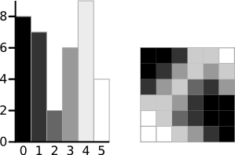
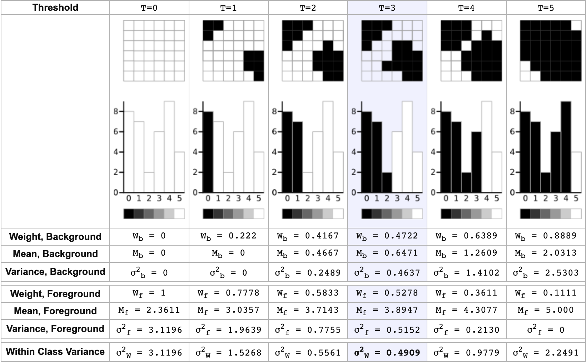
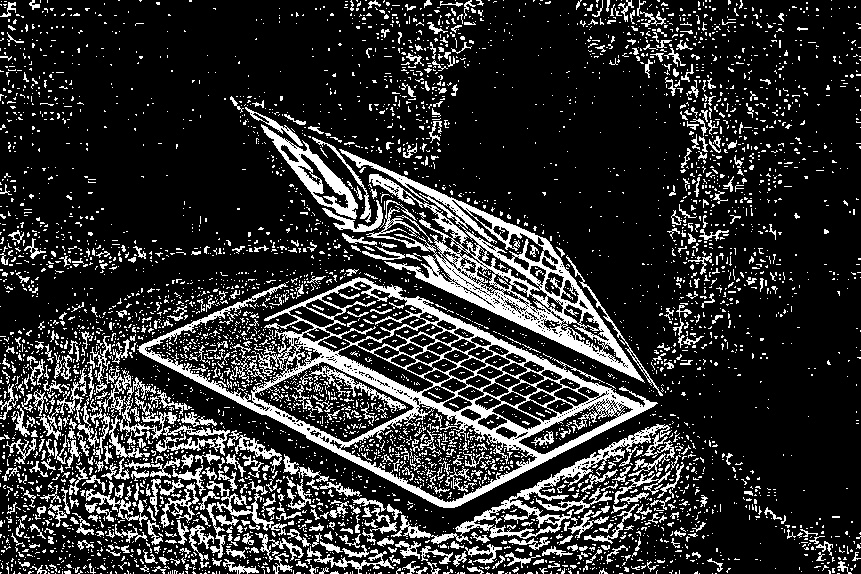

In this post, another basic image operation is explored - Image Thresholding.
This post is split into four sections:
- The Basic Principles of Image Thresholding
- Practice with OpenCV in Python
- Compute Otsu’s Algorithm and adaptiveThreshold From Scratch
Source code: https://github.com/BillMaZengou/cv_basis -> threshold.py (OpenCV)
The Basic Principles of Image Thresholding
Image Thresholding is the simplest segmentation method. This separation is based on the variation of intensity between the object pixels and the background pixels.
To do that, we compare each pixel value with respect to a set threshold. If one pixel is above the threshold, we can assign a value, otherwise we can assign another value. (e.g. \(255\) if it is above the threshold, \(0\) otherwise)
However, manually selecting the threshold can be problematic and requires many times of trail-and-error. A useful method is the Otsu Thresholding.
Otsu’s method was named after its inventor Nobuyuki Otsu. Otsu’s thresholding method involves iterating through all the possible threshold values (\(0\) to \(255\)) and calculating a measure of spread for the pixel levels each side of the threshold. The main purpose is to separate all the pixels into foreground and background, and find the threshold value where the sum of foreground and background spreads is at its minimum. Statistically, the spread is measured by the variance.
The next step is to calculate the ‘Within-Class Variance’. This is simply the sum of the two variances multiplied by their associated weights. Mathematically,
\[
\sigma^2 = W_b \sigma^2_b + W_f \sigma^2_f,
\]
where \(W_b\) and \(W_f\) denote the weights of background and foreground pixels respectively. Besides,
\[
W_b + W_f = 1
\]
as normal.
Here is an example. The set-up is shown below.

Then, we can use Otsu’s method and obtain that when the threshold is at \(3\), the ‘Within-Class Variance’ is at its minimum.

The problems of this approach are that the result highly related to the light conditions, and it works only if there are two distinct peaks in the histogram of the image theoretically. If the ambient light does not shine uniformly, this method simply separate the dark side and the bright side. If the histogram of the image has multiple peaks, Otsu’s method still only separate into two because of the theory.
To overcome those problems, Adaptive Threshold method can be used. Basically, it calculate the threshold for each pixel according to its neighbourhood using the mean of their intensities or the Gaussian distribution of the intensities.
Practice with OpenCV in Python
Documentation
In OpenCV, we consider two functions for image thresholding, cv2.threshold and cv2.adaptiveThreshold.
retval, dst = cv2.threshold(src, thresh, maxval, type)src -> (compulsory) Source image. Single-channel, 8-bit or 32-bit floating point.
dst -> Destination image.
thresh -> (compulsory) Threshold value.
maxval -> (compulsory) The value assigned to the pixel after comparing with the threshold value if THRESH_BINARY or THRESH_BINARY_INV is used.
type -> (compulsory) Thresholding type.
Note The input image should be a Greyscale image!!
Some basic thresholding types, which are applied in OpenCV, are
cv2.THRESH_BINARY
cv2.THRESH_BINARY_INV
cv2.THRESH_TRUNC
cv2.THRESH_TOZERO
cv2.THRESH_TOZERO_INV
The results using different types are shown below.
Next, the details of each type will be presented. Suppose that the histogram of the image and the threshold are as shown.
The red is the intensity distribution and the blue line is the threshold.
THRESH_BINARY
\[
dst(x, y) = maxval \space \space \mbox{if } src(x, y) > thresh
\]
\[
dst(x, y) = 0 \space \space \mbox{otherwise}
\]
THRESH_BINARY_INV
\[
dst(x, y) = 0 \space \space \mbox{if } src(x, y) > thresh
\]
\[
dst(x, y) = maxval \space \space \mbox{otherwise}
\]
THRESH_TRUNC
\[
dst(x, y) = maxval \space \space \mbox{if } src(x, y) > thresh
\]
\[
dst(x, y) = src(x, y) \space \space \mbox{otherwise}
\]
THRESH_TOZERO
\[
dst(x, y) = src(x, y) \space \space \mbox{if } src(x, y) > thresh
\]
\[
dst(x, y) = 0 \space \space \mbox{otherwise}
\]
THRESH_TOZERO_INV
\[
dst(x, y) = 0 \space \space \mbox{if } src(x, y) > thresh
\]
\[
dst(x, y) = src(x, y) \space \space \mbox{otherwise}
\]
Note To use Otsu thresholding, pass thresh = 0 and type = (...threshold type...)+cv2.THRESH_OTSU.
dst = cv2.adaptiveThreshold(src, maxValue, adaptiveMethod, thresholdType, blockSize, C)src -> (compulsory) Source image. 8-bit single-channel.
dst -> Destination image.
maxValue -> (compulsory) Non-zero value assigned to the pixels for which the condition is satisfied.
adaptiveMethod -> (compulsory) Adaptive thresholding algorithm to use, ADAPTIVE_THRESH_MEAN_C or ADAPTIVE_THRESH_GAUSSIAN_C.
thresholdType -> (compulsory) Thresholding type that must be either THRESH_BINARY or THRESH_BINARY_INV.
blockSize -> (compulsory) Size of a pixel neighbourhood that is used to calculate a threshold value for the pixel: 3, 5, and so on.
C -> (compulsory) Constant subtracted from the mean or weighted mean. It is normally positive but may be zero or negative as well.
Implementation
import cv2
name = image_name
img = cv2.imread('./{}.jpg'.format(name), cv2.IMREAD_UNCHANGED)
img = cv2.cvtColor(img, cv2.COLOR_BGR2GRAY)
cv2.imshow("Grey image", img)
# Simple image thresholding with your defined value (in this case, 127)
_, simple = cv2.threshold(img, 127, 255, cv2.THRESH_BINARY)
cv2.imshow("Simple thresholding image", simple)
# Otsu thresholding (retval is the threshold found with Otsu Algorithm)
retval, otsu = cv2.threshold(img, 0, 255, cv2.THRESH_BINARY+cv2.THRESH_OTSU)
cv2.imshow("Otsu thresholding image", otsu)
print(retval)
# Mean Adaptive Thresholding and Gaussian Adaptive Thresholding
mean = cv2.adaptiveThreshold(img, 255, cv2.ADAPTIVE_THRESH_MEAN_C, cv2.THRESH_BINARY, 11, 2)
gauss = cv2.adaptiveThreshold(img, 255, cv2.ADAPTIVE_THRESH_GAUSSIAN_C, cv2.THRESH_BINARY, 11, 2)
cv2.imshow("Mean Adaptive Thresholding image", mean)
cv2.imshow("Gaussian Adaptive Thresholding image", gauss)
cv2.waitKey(0)
cv2.destroyAllWindows()Example results are shown below:
Greyscale image
Simple Thresholding with Threshold = 127
Otsu Thresholding with Threshold = 48)
Compare result from Otsu thresholding with next two.
Mean Adaptive Thresholding
Gaussian Adaptive Thresholding
Adaptive Thresholding Parameters
Two important parameters in adaptive thresholding are blockSize and C. Here, some results from mean adaptive thresholding with different parameters are presented for comparison.
blockSize
Adaptive Thresholding with blockSize = 3
Adaptive Thresholding with blockSize = 9
Adaptive Thresholding with blockSize = 15
C
Adaptive Thresholding with C = -20
Adaptive Thresholding with C = -10
Adaptive Thresholding with C = 0

Adaptive Thresholding with C = 10
Adaptive Thresholding with C = 20
Compute Otsu’s Algorithm From Scratch (TODO)
Also, some optimisations available for Otsu’s Thresholding exists. Search and implement it.
Acknowledgement
The creation of this post is inspired by Datawhale.
Reference
- Photo by Omid Armin on Unsplash
- Blog.csdn.net. 2020. OTSU算法（大津法—最大类间方差法）原理及实现_人工智能_小武的博客-CSDN博客. [online] Available at: https://blog.csdn.net/weixin_40647819/article/details/90179953 [Accessed 29 April 2020].
- Blog.csdn.net. 2020. 自适应阈值（Adaptivethreshold）分割原理及实现_人工智能_小武的博客-CSDN博客. [online] Available at: https://blog.csdn.net/weixin_40647819/article/details/90213858 [Accessed 29 April 2020].
- Docs.opencv.org. 2020. Basic Thresholding Operations — Opencv 2.4.13.7 Documentation. [online] Available at: https://docs.opencv.org/2.4/doc/tutorials/imgproc/threshold/threshold.html [Accessed 29 April 2020].
- Opencv-python-tutroals.readthedocs.io. 2020. Image Thresholding — Opencv-Python Tutorials 1 Documentation. [online] Available at: https://opencv-python-tutroals.readthedocs.io/en/latest/py_tutorials/py_imgproc/py_thresholding/py_thresholding.html#exercises [Accessed 29 April 2020].
- Labbookpages.co.uk. 2020. Otsu Thresholding - The Lab Book Pages. [online] Available at: http://www.labbookpages.co.uk/software/imgProc/otsuThreshold.html [Accessed 29 April 2020].